核心 GIS 概念#
Core GIS concepts
处理地理空间数据很复杂，因为您要处理的是地球表面的数学模型。在很多方面，很容易将地球视为一个球体，您可以在其上放置数据。这可能很容易，但并不准确——地球更像是一个扁球体，而不是一个完美的球体。这种差异以及我们在此不会涉及的其他数学复杂性意味着，表示地球表面上的点、线和区域是一个相当复杂的过程。
让我们来看看您在处理地理空间数据时必须熟悉的一些关键 GIS 概念。
Working with geospatial data is complicated because you are dealing with mathematical models of the earth’s surface. In many ways it is easy to think of the earth as a sphere on which you can place your data. That might be easy, but it isn’t accurate—the earth is more like an oblate spheroid than a perfect sphere. This difference, as well as other mathematical complexities we won’t get into here, means that representing points, lines, and areas on the surface of the earth is a rather complicated process.
Let’s take a look at some of the key GIS concepts you will have to become familiar with as you work with geospatial data.
位置#
Location
位置表示地球表面上的点。测量位置最常见的方法之一是使用纬度和经度坐标。例如，我当前的位置（由 GPS 接收器测得）是南纬 38.167446 度，东经 176.234436 度。这些数字是什么意思？它们有什么用？
可以将地球想象成一个中空的球体，并在中间画一条轴线：
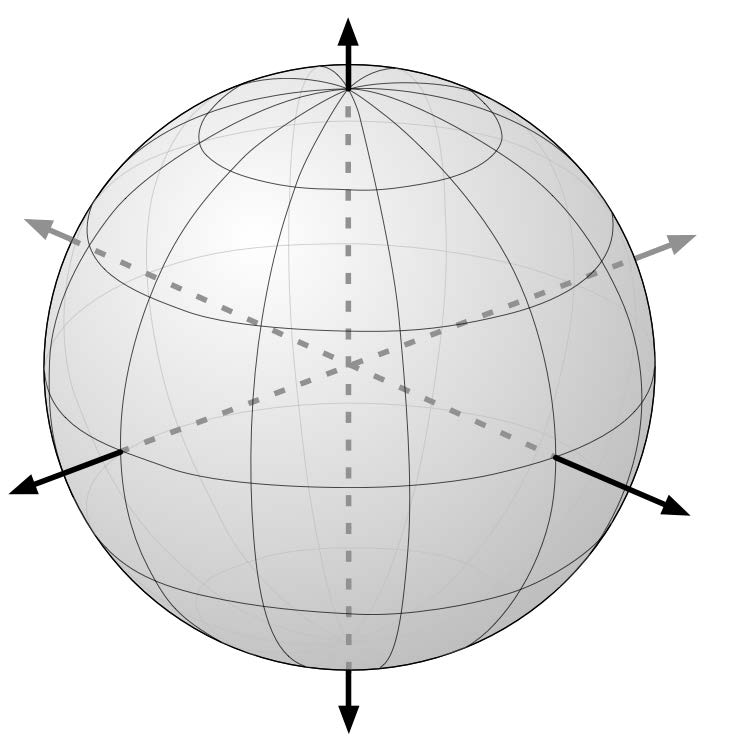{kind=link}
对于地球表面上的任意一点，可以画一条连接该点与地球中心的线，如下图所示：
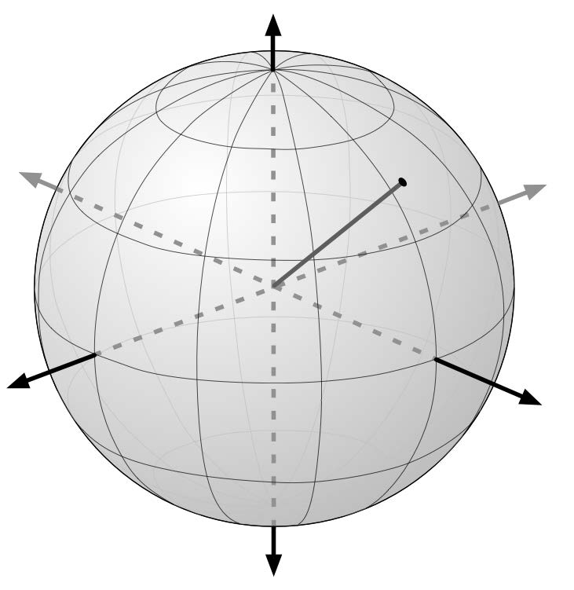{kind=link}
该点的纬度是该线在南北方向上相对于赤道所形成的角度：
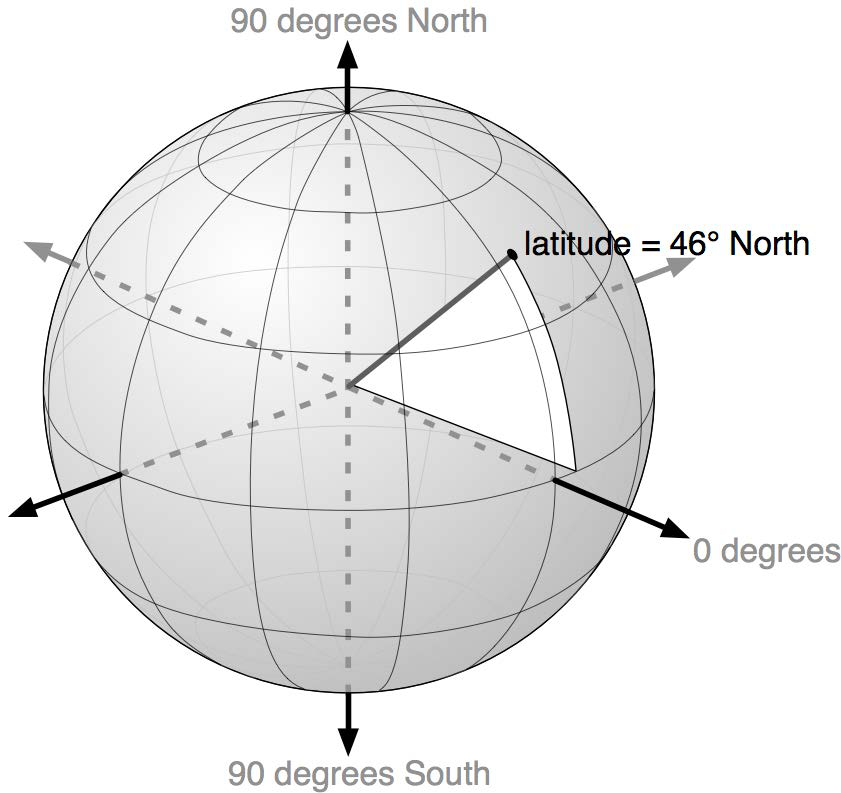{kind=link}
同样，该点的经度是该线在东西方向上相对于一个任意起点（通常是位于英国格林尼治的皇家天文台）所形成的角度：
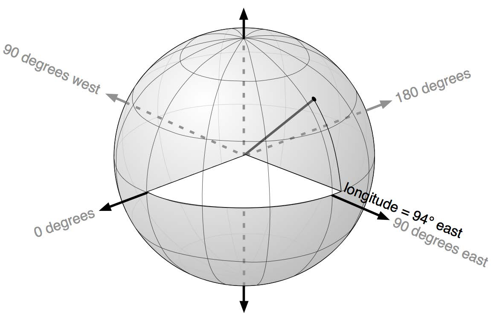{kind=link}
按照惯例，正的纬度值表示位于北半球，而负的纬度值表示位于南半球。同样，正的经度值表示位于格林尼治以东，负的经度值表示位于格林尼治以西。因此，纬度和经度覆盖整个地球，如下图所示：
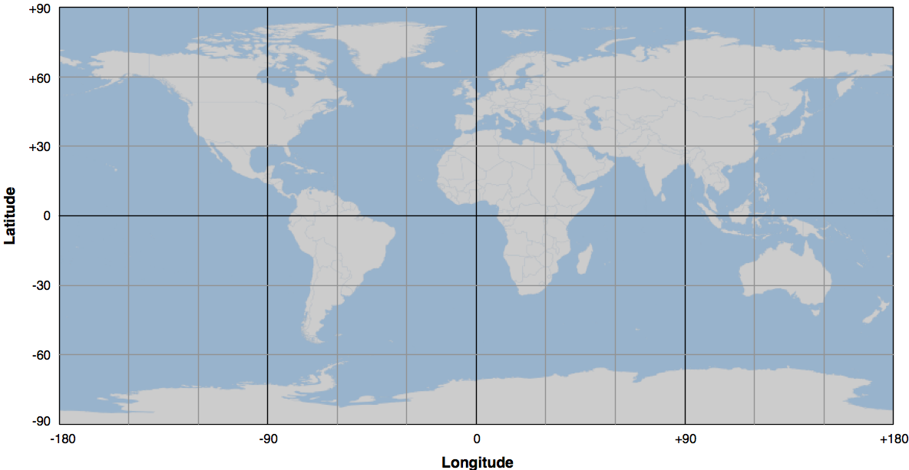{kind=link}
表示相同纬度点的水平线称为 纬线（parallels）， 而表示相同经度点的垂直线称为 经线（meridians）。 位于零经度的经线通常称为 本初子午线（prime meridian）。 按照定义，位于零纬度的纬线与地球的赤道重合。
在处理纬度和经度值时，需要记住两点：
西经通常表示为负值，但在某些情况下（特别是涉及美国数据时），西经可能被表示为正值。
经度值在 ±180 度处会 环绕。也就是说，向东移动时，经度值将依次变化为 177、178、179、180、-179、-178、-177，以此类推。如果不使用库，而是自己计算距离，这种环绕可能会让计算变得更加复杂。
纬度和经度值指的是 大地测量位置（geodetic location）。大地测量位置指的是地球表面上的精确点，而不考虑该位置上可能存在的任何物体。虽然我们将处理的大部分数据都涉及大地测量位置，但描述位置的方法还有其他几种。
例如， 市政位置（civic location） 仅指街道地址，这是另一种完全有效（尽管在科学上不够精确）的定位方式。同样，司法辖区位置（jurisdictional location） 包含有关该位置所属的政府边界（如选区、行政区或城市）信息，在某些情境下，这些信息非常重要。
Locations represent points on the surface of the earth. One of the most common ways to measure location is through the use of latitude and longitude coordinates. For example, my current location (as measured by a GPS receiver) is 38.167446 degrees south and 176.234436 degrees east. What do these numbers mean, and how are they useful?
Think of the earth as a hollow sphere with an axis drawn through the middle:
For any given point on the earth’s surface, you can draw a line that connects that point with the centre of the earth, as shown in the following image:
The point’s latitude is the angle that this line makes in the north-south direction, relative to the equator:
In the same way, the point’s longitude is the angle that this line makes in the east-west direction, relative to an arbitrary starting point (typically the location of the Royal Observatory in Greenwich, England):
By convention, positive latitude values are in the northern hemisphere, while negative latitude values are in the southern hemisphere. Similarly, positive longitude values are east of Greenwich, and negative longitude values are west of Greenwich. Thus, latitudes and longitudes cover the entire earth as shown in the following image:
The horizontal lines, representing points of equal latitude, are called parallels, while the vertical lines, representing points of equal longitude, are called meridians. The meridian at zero longitude is often called the prime meridian. By definition, the parallel at zero latitude corresponds with the earth’s equator.
There are two things to remember when working with latitude and longitude values:
Western longitudes are generally negative, but you may find situations (particularly when dealing with US-specific data) where western longitudes are given as positive values.
The longitude values wrap around at the ±180 degrees point. That is, as you travel east, your longitude will go 177, 178, 179, 180, -179, -178, -177, and so on. This can make basic distance calculations rather confusing if you are doing them yourself rather than relying on a library to do the work for you.
A latitude and longitude value refers to what is called a geodetic location. A geodetic location identifies a precise point on the earth’s surface, regardless of what might be at that location. While much of the data we will be working with involves geodetic locations, there are other ways of describing a location which you may encounter.
For example, a civic location is simply a street address, which is another perfectly valid (though scientifically less precise) way of defining a location. Similarly, jurisdictional locations include information about which governmental boundary (such as an electoral ward, borough, or city) the location is within, as this information is important in some contexts.
距离#
Distance
地球表面上两点之间的距离可以用不同的方式来表示。例如：
角距离（Angular distance）：这是从地球中心发出的两条射线穿过两个点之间的夹角：
{kind=link}
角距离在地震学中被广泛使用，在处理地理空间数据时，你可能会遇到这种表示方式。
线性距离（Linear distance）：这通常是人们谈论“距离”时的含义，即地球表面上两点之间的直线距离：
这通常被描述为“鸟飞直线距离（as the crow flies）”。我们将在后续部分更详细地讨论这一概念，不过需要注意，线性距离并不像它看起来那么简单。
行程距离（Traveling distance）：尽管线性距离（“鸟飞直线距离”）很有用，但大多数人并不能像乌鸦一样直接飞行。另一种测量距离的方式是计算从一个点到另一个点的实际行程距离，通常沿着道路或其他明显的路线进行测量：
{kind=link}
大多数情况下，我们需要处理的是线性距离。如果地球是平的，计算线性距离会非常简单——只需测量两点之间的直线长度。然而，地球并不是平的，因此实际的距离计算要复杂得多：
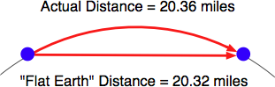由于我们计算的是地球表面上的两点距离，而不是平面上的距离，因此我们实际上使用的是 大圆距离（great circle distance）。大圆距离是指沿着以地球中心为圆心的大圆的半圆弧长，如下图所示：
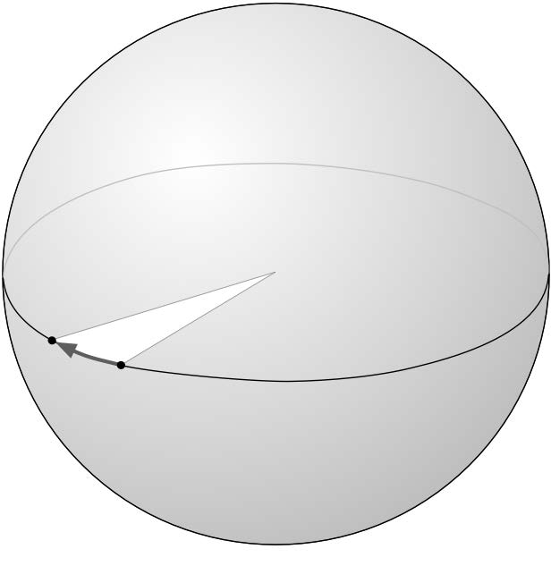{kind=link}
如果假设地球是一个完美的球体，那么计算两个点之间的大圆距离相对简单，Haversine 公式 经常用于此类计算。当然，也有更复杂的方法可以更准确地表示地球的形状，但在许多情况下，Haversine 公式已经足够精确。
备注
我们将在本章后续部分详细学习 Haversine 公式。
The distance between two points on the earth’s surface can be thought of in different ways. For example:
Angular distance: This is the angle between two rays going out from the centre of the earth through the two points:
Angular distances are commonly used in seismology, and you may encounter them when working with geospatial data.
Linear distance: This is what people typically mean when they talk of distance: how far apart two points on the earth’s surface are:
This is often described as an “as the crow flies” distance. We’ll discuss this in more detail shortly, though be aware that linear distances aren’t quite as simple as they might appear.
Traveling distance: Linear (“as the crow flies”) distances are all very well, but very few people can fly like crows. Another useful way of measuring distance is to measure how far you would actually have to travel to get from one point to another, typically following a road or other obvious route:
Most of the time, you will be dealing with linear distances. If the earth was flat, linear distances would be trivial to calculate—you simply measure the length of a line drawn between the two points. Of course, the earth is not flat, which means that actual distance calculations are rather more complicated:
Because we are working with distances between points on the earth’s surface, rather than points on a flat surface, we are actually using what is called the great circle distance. The great circle distance is the length of a semicircle between two points on the surface of the earth, where the semicircle is centered around the middle of the earth:
It is relatively straightforward to calculate the great circle distance between any two points if you assume that the earth is spherical; the Haversine formula is often used for this. More complicated techniques which more accurately represent the shape of the earth are available, though in many cases the Haversine formula is sufficient.
备注
We will learn more about the Haversine formula later in this chapter.
单位#
Units
1999 年 9 月，“火星气候探测器”（Mars Climate Orbiter）在经过 286 天的太空飞行后，抵达火星大气层的外缘。这一探测任务耗资 3.27 亿美元。然而，在进入最终轨道时，由于计算错误，探测器飞得太低，最终被摧毁。原因是什么？探测器的推进器使用英制单位计算推力，而探测器的计算机则使用公制单位。这次事故给 NASA 带来了巨大损失，同时也成为一个深刻的教训——准确理解数据所使用的单位至关重要。
地理空间数据可能采用多种不同的单位。距离可以使用公制或英制单位测量，但实际上，同一距离可能有多种测量方式，包括：
毫米（Millimeters）
厘米（Centimeters）
英寸（Inches）
国际英尺（International feet）
美国测量英尺（U.S. Survey feet）
米（Meters）
码（Yards）
千米（Kilometers）
国际英里（International miles）
美国测量（法定）英里（U.S. survey (statute) miles）
海里（Nautical miles）
在处理距离数据时，了解数据所使用的单位至关重要。此外，在实际应用中，常常需要将数据从一种单位转换为另一种单位。
角度测量也可以使用不同的单位，如 度（degrees） 或 弧度（radians）。同样，转换角度单位的需求也十分常见。
尽管这些严格来说不能算是不同的单位，但在实际操作中，经纬度 可能会采用不同的表示方式。传统上，经纬度通常使用 度、分、秒 表示，例如：
176° 14' 4''
另一种表示方式是 度和小数分 记法：
176° 14.066'
最后，还可以使用 十进制度（decimal degrees） 记法：
176.234436°
十进制度目前非常常见，主要是因为它可以直接作为浮点数输入到程序中。但是，在使用这些数据之前，你可能需要将经纬度值从其他格式转换为十进制度。
另一种可能的经纬度表示问题是，象限（东、西、北、南）有时会作为单独的值，而不是使用正负数。例如：
176.234436° E
幸运的是，这些转换都相对简单。但重要的是，你必须清楚数据所使用的单位和格式——虽然你的软件可能不会导致探测器坠毁，但如果处理不当，它可能会产生一些非常奇怪、难以理解的结果。
In September 1999, the Mars Climate Orbiter reached the outer edges of the Martian atmosphere, after having traveled through space for 286 days and costing a total of $327 million to create. As it approached its final orbit, a miscalculation caused it to fly too low, and the Orbiter was destroyed. The reason? The spacecraft’s thrusters calculated force using imperial units, while the spacecraft’s computer worked with metric units. The result was a disaster for NASA, and a pointed reminder of just how important it is to understand which units your data is in.
Geospatial data can come in a variety of different units. Distances can be measured in metric and imperial, of course, but there are actually a lot of different ways in which a given distance can be measured, including:
Millimeters
Centimeters
Inches
International feet
U.S. Survey feet
Meters
Yards
Kilometers
International miles
U.S. survey (statute) miles
Nautical miles
Whenever you are working with distance data, it is important that you know which units those distances are in. You will also often find it necessary to convert data from one unit of measurement to another.
Angular measurements can also be in different units: degrees or radians. Once again, you will often have to convert from one to the other.
While these are not strictly speaking different units, you will often find yourself dealing with different ways of representing longitude and latitude values. Traditionally, longitude and latitude values have been written using degrees, minutes, and seconds notation, as follows:
176° 14' 4''
Another possible way of writing these numbers is to use degrees and decimal minutes notation:
176° 14.066'
Finally, there is the decimal degrees notation:
176.234436°
Decimal degrees are quite common now, mainly because these are simply floating-point numbers you can put directly into your programs, but you may well need to convert longitude and latitude values from other formats before you can use them.
Another possible issue with longitude and latitude values is that the quadrant (east, west, north, south) can sometimes be given as a separate value rather than using positive or negative values. For example:
176.234436° E
Fortunately, all these conversions are relatively straightforward. But it is important to know which units, and which format your data is in—your software may not crash a spacecraft, but it will produce some very strange and incomprehensible results if you aren’t careful.
投影#
Projections
从地球的三维形状创建二维地图的过程称为 投影（projection）。投影是一种数学变换，它将地球的三维形状“展开”并投射到二维平面上。
已经开发了数百种不同的投影方式，但没有一种是完美的。事实上，在数学上，不可能在不引入某种失真的情况下，将地球的三维表面表示在二维平面上。关键在于选择一种适合特定用途的投影，使得失真对该用途的影响最小。例如，一些投影可以准确表示地球表面的某些区域，但会对其他区域造成严重失真。这些投影适用于需要精确表示的区域，但不适用于其他地方。还有一些投影会扭曲国家的形状但保持其面积不变，而另一些投影则恰好相反。
投影主要分为三大类：圆柱投影（cylindrical）、圆锥投影（conical） 和 方位投影（azimuthal）。接下来，我们将简要介绍这些投影方式。
Creating a two-dimensional map from the three-dimensional shape of the earth is a process known as projection. A projection is a mathematical transformation that “unwraps” the three-dimensional shape of the earth and places it onto a two- dimensional plane.
Hundreds of different projections have been developed, but none of them are perfect. Indeed, it is mathematically impossible to represent the three-dimensional earth’s surface on a two-dimensional plane without introducing some sort of distortion; the trick is to choose a projection where the distortion doesn’t matter for your particular use. For example, some projections represent certain areas of the earth’s surface accurately, while adding major distortion to other parts of the earth; these projections are useful for maps in the accurate portion of the earth, but not elsewhere. Other projections distort the shape of a country while maintaining its area, while yet other projections do the opposite.
There are three main groups of projections: cylindrical, conical, and azimuthal. Let’s look at each of these briefly.
圆柱投影#
Cylindrical projections
理解 圆柱投影（cylindrical projections） 的一种简单方法是，把地球想象成一个球形的 中国灯笼，中间点燃着一支蜡烛：
{kind=link}
如果将这个“灯笼地球”放入一个纸质圆柱体中，那么蜡烛的光线会将地球表面投影到圆柱体的内侧：
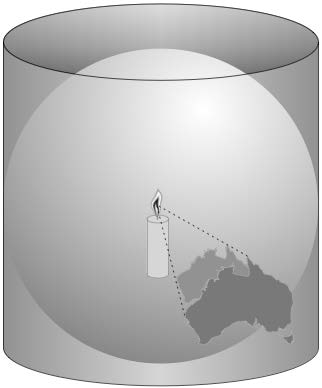{kind=link}
然后，我们可以“展开”这个圆柱体，得到地球的二维地图：
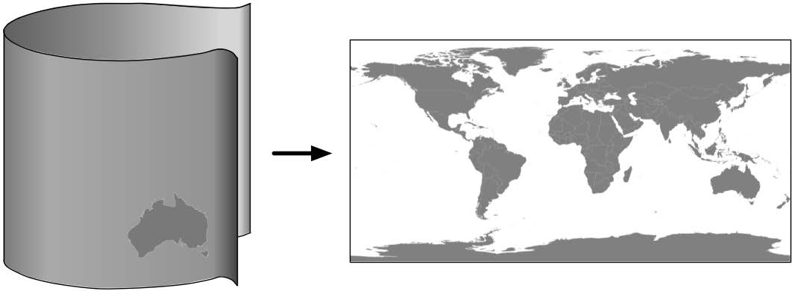{kind=link}
当然，这只是一个简化的类比——实际上，地图投影并不会真的使用光源来将地球表面投射到平面上，而是通过复杂的数学变换来实现相同的效果。
常见的圆柱投影类型包括 墨卡托投影（Mercator Projection）、等面积圆柱投影（Equal-Area Cylindrical Projection） 和 通用横轴墨卡托投影（Universal Transverse Mercator Projection, UTM）。下图（来自 Wikipedia）是一个 墨卡托投影 的示例：
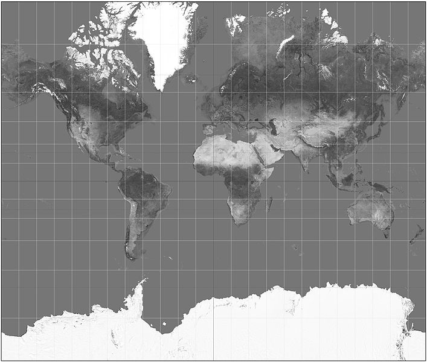{kind=link}
An easy way to understand cylindrical projections is to imagine that the earth is like a spherical Chinese lantern, with a candle in the middle:
If you placed this lantern-earth inside a paper cylinder, the candle would “project” the surface of the earth onto the inside of the cylinder:
You can then “unwrap” this cylinder to obtain a two-dimensional image of the earth:
Of course, this is a simplification—in reality, map projections don’t actually use light sources to project the earth’s surface onto a plane, but instead use sophisticated mathematical transformations to achieve the same effect.
Some of the main types of cylindrical projections include the Mercator Projection, the Equal-Area Cylindrical Projection, and the Universal Transverse Mercator Projection. The following map, taken from Wikipedia, is an example of a Mercator projection:
圆锥投影#
Conic projections
圆锥投影（conic projection） 是通过将地球表面投影到一个圆锥体上得到的：
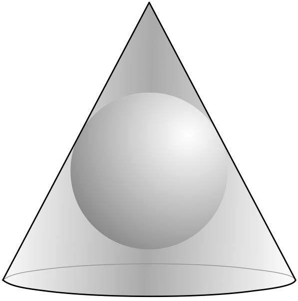{kind=link}
然后，将圆锥体“展开”，即可生成最终的地图。常见的圆锥投影类型包括 阿尔伯斯等面积投影（Albers Equal-Area Projection）、兰伯特正形圆锥投影（Lambert Conformal Conic Projection） 和 等距投影（Equidistant Projection）。下图（来自 Wikipedia）是 兰伯特正形圆锥投影 的示例：
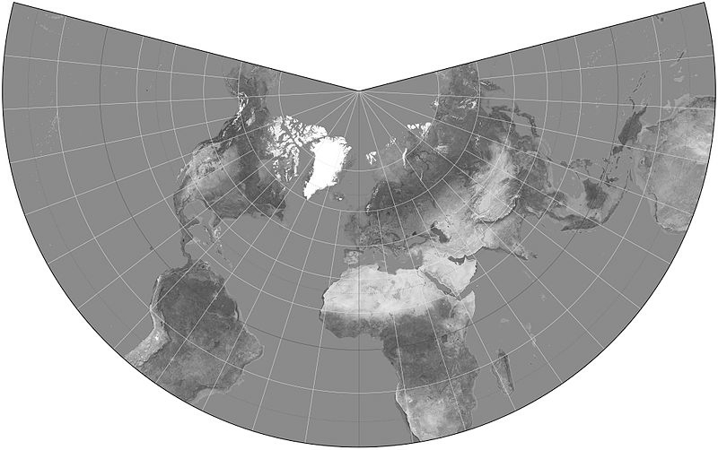{kind=link}
以极点为中心的圆锥投影在显示 宽度较大但高度较小 的区域（例如 俄罗斯地图）时特别有用。
A conic projection is obtained by projecting the earth’s surface onto a cone:
The cone is then “unwrapped” to produce the final map. Some of the more common types of conic projections include the Albers Equal-Area Projection, the Lambert Conformal Conic Projection, and the Equidistant Projection. The following is an example of a Lambert Conformal Conic Projection, again taken from Wikipedia:
Polar-aligned conic projections are particularly useful when displaying areas that are wide but not very high, such as a map of Russia.
方位投影#
Azimuthal projections
方位投影（azimuthal projection） 是直接将地球表面投影到一个平面上：
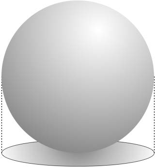{kind=link}
方位投影以某个特定点为中心，通常不会显示整个地球表面。然而，它能够很好地体现地球的球形特征。在许多方面，方位投影展现了从太空中看到的地球视角。
常见的方位投影类型包括 透视投影（Gnomonic Projection）、兰伯特等面积方位投影（Lambert Equal-Area Azimuthal Projection） 和 正射投影（Orthographic Projection）。下图（来自 Wikipedia）展示了 以北极为中心的透视投影：
{kind=link}
An azimuthal projection involves projecting the earth’s surface directly onto a flat surface:
Azimuthal projections are centered around a single point, and don’t generally show the entire earth’s surface. They do, however, emphasize the spherical nature of the earth. In many ways, azimuthal projections depict the earth as it would be seen from space.
Some of the main types of azimuthal projections include the Gnomonic Projection, the Lambert Equal-Area Azimuthal Projection, and the Orthographic Projection. The following example, taken from Wikipedia, shows a Gnomonic projection based around the north pole:
地图投影的性质#
The nature of map projections
正如前面提到的，并不存在 完美的投影——每种投影都会在某种程度上扭曲地球表面。事实上，数学家 卡尔·高斯（Carl Gauss） 证明了，在数学上，不可能在不引入某种失真的情况下，将球体等三维形状投影到平面上。这正是为什么存在如此多种不同的投影方式：某些投影更适用于特定用途，但没有任何一种投影能够满足所有需求。
在创建或使用地理空间数据时，了解数据所使用的 投影方式 至关重要。如果不知道数据所采用的投影方式，你将无法正确绘制数据或执行精确计算。
As mentioned earlier, there is no such thing as a perfect projection—every projection distorts the earth’s surface in some way. Indeed, the mathematician Carl Gausse proved that it is mathematically impossible to project a three-dimensional shape such as a sphere onto a flat plane without introducing some sort of distortion. This is why there are so many different types of projections: some projections are more suited to a given purpose, but no projection can do everything.
Whenever you create or work with geospatial data, it is essential that you know which projection has been used to create that data. Without knowing the projection, you won’t be able to plot data or perform accurate calculations.
坐标系#
Coordinate systems
与地图投影密切相关的概念是 坐标系统（coordinate system）。坐标系统主要分为两类：投影坐标系统（projected coordinate systems） 和 非投影坐标系统（unprojected coordinate systems）。
纬度和经度（latitude and longitude） 是 非投影坐标系统 的一个示例。这类坐标直接对应地球表面上的某个点：
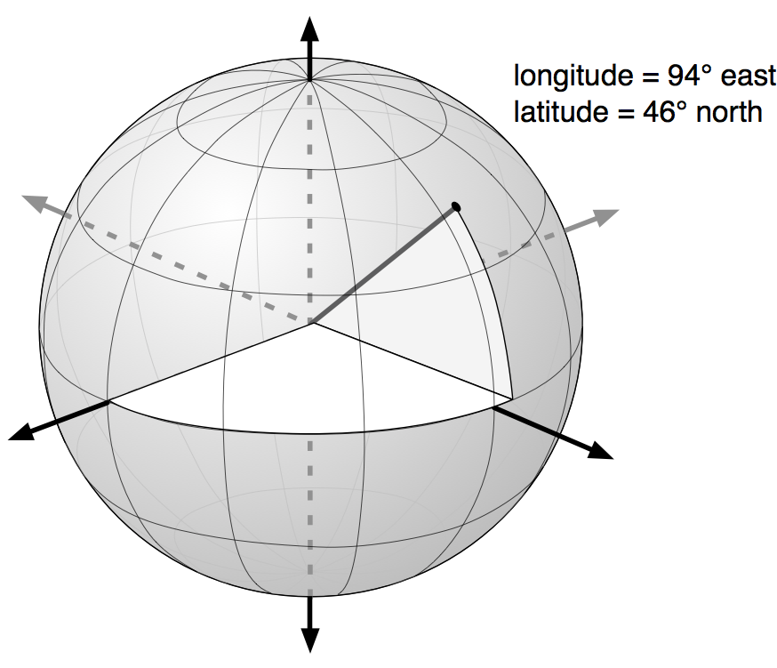{kind=link}
非投影坐标的优势在于，它们可以 精确表示地球表面上的点，但在执行 距离计算 和其他地理空间计算时会变得非常复杂。
相比之下，投影坐标（projected coordinates） 则是指 在二维地图上表示地球表面上的点 的坐标：
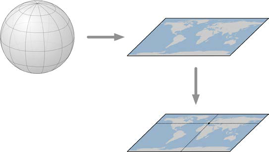{kind=link}
投影坐标系统 （顾名思义）使用 地图投影 将地球转换为 二维笛卡尔平面（Cartesian plane），然后将各个点投影到该平面上。使用投影坐标系统时，必须知道所使用的投影方式。
无论是投影坐标还是非投影坐标，坐标系统都包含一组 参考点（reference points），用于确定点的位置。例如，非投影 经纬度坐标系统 中，经度 0° 由通过英国 格林尼治天文台（Greenwich Observatory） 的 南北方向线 表示，而 纬度 0° 则对应 地球赤道（equator）。
对于 投影坐标系统，通常需要定义一个 原点（origin） 和 地图单位（map units）。某些坐标系统还会使用 假北值（false northing） 和 假东值（false easting） 来调整原点的位置，如下图所示：
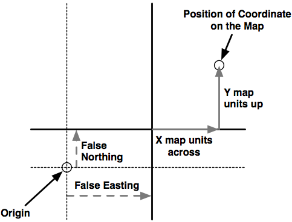{kind=link}
一个具体示例是 通用横轴墨卡托（Universal Transverse Mercator, UTM） 坐标系统。UTM 将地球划分为 60 个不同的“带”（zones），每个带使用不同的地图投影，以 最小化投影误差。在每个带内，坐标表示的是距离该带 原点（origin） 的 米数（meters），该原点位于该带 中央子午线（central meridian） 与 赤道（equator） 的交点。然后，为了避免使用负数，会在计算距离时 添加假北值和假东值。
可以想象，使用 投影坐标系统 可能会变得相当复杂。然而，投影坐标的 主要优势 在于：它们使地理空间计算变得简单。例如，在相同的 UTM 坐标系统 内计算两点之间的距离，只需 计算它们之间的线段长度，该距离的单位就是 米（meters）。相比之下，使用 非投影坐标（经纬度） 计算距离则要复杂得多。
当然，这种方法 仅在两个点处于相同的投影坐标系统时才成立。由于 投影坐标系统通常只在较小区域内保持较高精度，如果两个点处于不同的坐标系统（例如 不同的 UTM 带），计算可能会出现问题。而 非投影坐标系统 在这方面的优势则是 可以覆盖整个地球。
Closely related to map projection is the concept of a coordinate system. There are two types of coordinate systems you will need to be familiar with: projected coordinate systems, and unprojected coordinate systems.
Latitude and longitude values are an example of an unprojected coordinate system. These are coordinates that refer directly to a point on the earth’s surface:
Unprojected coordinates are useful because they can accurately represent a desired point on the earth’s surface, but they also make it quite difficult to perform distance and other geospatial calculations.
Projected coordinates, on the other hand, are coordinates which refer to a point on a two-dimensional map that represents the surface of the earth:
A projected coordinate system, as the name implies, makes use of a map projection to first convert the earth into a two-dimensional Cartesian plane, and then places points onto that plane. To work with a projected coordinate system, you need to know which projection was used to create the underlying map.
For both projected and unprojected coordinates, the coordinate system also implies a set of reference points that allow you to identify where a given point will be. For example, the unprojected lat/long coordinate system represents the longitude value of zero by a line running north-south through the Greenwich observatory in England. Similarly, a latitude value of zero represents a line running around the equator of the earth.
For projected coordinate systems, you typically define an origin and the map units. Some coordinate systems also use false northing and false easting values to adjust the position of the origin, as shown in the following image:
To give a concrete example, the Universal Transverse Mercator (UTM) coordinate system divides the world up into 60 different “zones”, each zone using a different map projection to minimize projection errors. Within a given zone, the coordinates are measured as the number of meters away from the zone’s origin, which is the intersection of the equator and the central meridian for that zone. False northing and false easting values are then added to the distance in meters away from this reference point to avoid having to deal with negative numbers.
As you can imagine, working with projected coordinate systems like this can get quite complicated. The big advantage of projected coordinates, however, is that it is easy to perform geospatial calculations using these coordinates. For example, to calculate the distance between two points that both use the same UTM coordinate system, you simply calculate the length of the line between them, which is the distance between the two points, in meters. This is ridiculously easy, compared with the work required to calculate distances using unprojected coordinates.
Of course, this assumes that the two points are both in the same coordinate system. Since projected coordinate systems are generally only accurate over a relatively small area, you can get into trouble if the two points aren’t both in the same coordinate system (for example, if they are in two different UTM zones). This is where unprojected coordinate systems have a big advantage: they cover the entire earth.
基准#
Datums
粗略地说， 基准面（datum） 是一种用于描述地球表面位置的地球数学模型。基准面由一组参考点组成，通常结合了地球形状的模型。这些参考点用于描述地球表面其他点的位置，而地球形状模型则用于将地球表面投影到二维平面上。因此，基准面被地图投影和坐标系统共同使用。
尽管全球有数百种不同的基准面在使用，但大多数只适用于某个局部区域。以下是三种覆盖较大区域的主要 参考基准面（reference datums），在处理地理空间数据时你很可能会遇到它们：
NAD 27：即 1927 年的北美基准面。它包括地球形状的定义（使用 1866 年的 Clarke 椭球体模型），并以位于堪萨斯州的 Meades Ranch 为参考点。NAD 27 可以被视为一个覆盖北美的地方性基准面。
NAD 83：即 1983 年的北美基准面。该基准面使用了更复杂的地球形状模型（1980 年的地理参考系统，GRS 80）。NAD 83 可以被视为一个覆盖美国、加拿大、墨西哥和中美洲的地方性基准面。
WGS 84：即 1984 年的世界大地测量系统。它是一个覆盖整个地球的全球基准面，采用了另外一种地球形状模型（1996 年的地球重力模型，EGM 96），并基于国际地球自转服务（IERS）国际参考子午线的参考点。WGS 84 是一个非常流行的基准面。处理美国地理空间数据时，WGS 84 基本上与 NAD 83 相同。WGS 84 还具有被全球定位系统（GPS）卫星使用的独特地位，因此所有 GPS 单元采集的数据都将使用该基准面。
尽管 WGS 84 是当前最常用的基准面，许多地理空间数据仍然使用其他基准面。每当你处理坐标值时，了解该坐标是基于哪个基准面计算的非常重要。例如，在 NAD 27 中的某个点，可能会与在 WGS 84 中表示的同一坐标相差数百英尺。因此，了解所使用的基准面对于确保地理空间数据的准确性至关重要，必要时需要进行基准面之间的转换。
Roughly speaking, a datum is a mathematical model of the earth used to describe locations on the earth’s surface. A datum consists of a set of reference points, often combined with a model of the shape of the earth. The reference points are used to describe the location of other points on the earth’s surface, while the model of the earth’s shape is used when projecting the earth’s surface onto a two-dimensional plane. Thus, datums are used by both map projections and coordinate systems.
While there are hundreds of different datums in use throughout the world, most of these only apply to a localized area. There are three main reference datums which cover larger areas, and which you are likely to encounter when working with geospatial data:
NAD 27: This is the North American Datum of 1927. It includes a definition of the earth’s shape (using a model called the Clarke Spheroid of 1866), and a set of reference points centered around Meades Ranch in Kansas. NAD 27 can be thought of as a local datum covering North America.
NAD 83: The North American Datum of 1983. This datum makes use of a more complex model of the earth’s shape (the 1980 Geodetic Reference System, GRS 80). NAD 83 can be thought of as a local datum covering the United States, Canada, Mexico, and Central America.
WGS 84: The World Geodetic System of 1984. This is a global datum covering the entire earth. It makes use of yet another model of the earth’s shape (the Earth Gravitational Model of 1996, EGM 96) and uses reference points based on the IERS International Reference Meridian. WGS 84 is a very popular datum. When dealing with geospatial data covering the United States, WGS 84 is basically identical to NAD 83. WGS 84 also has the distinction of being used by Global Positioning System satellites, so all data captured by GPS units will use this datum.
While WGS 84 is the most common datum in use today, a lot of geospatial data makes use of other datums. Whenever you are dealing with a coordinate value, it is important to know which datum was used to calculate that coordinate. A given point in NAD 27, for example, may be several hundred feet away from that same coordinate expressed in WGS 84. Thus, it is vital that you know which datum is being used for a given set of geospatial data, and convert to a different datum where necessary.
形状#
Shapes
地理空间数据通常以 形状 的形式表示，诸如点、路径和轮廓：
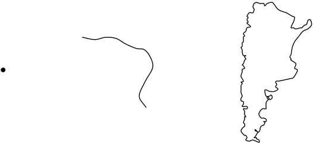{kind=link}
点 当然只是一个坐标，通常由在投影坐标系统或未投影坐标系统中描述的两个或更多数字组成。
备注
下载示例代码
您可以从您的账户中下载所有已购买 Packt 书籍的示例代码文件，网址为 http://www.packtpub.com。如果您是从其他地方购买的本书，可以访问 http://www.packtpub.com/support 并注册，将文件直接通过电子邮件发送给您。
路径通常使用称为 线字符串（linestring） 的方式描述：
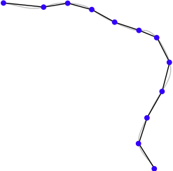{kind=link}
线字符串表示由一系列连接的线段构成的路径。线字符串是对路径的一种简化，旨在近似曲线路径，而无需处理绘制和操作曲线所需的复杂数学。线字符串在地理空间数据中常用于表示道路、河流、等高线等。
备注
下载示例代码
线字符串有时也称为 折线（polylines）。当线字符串是 封闭的 （即，最后一条线段结束于第一条线段开始的位置）时，线字符串通常称为 线性环（linear ring）。
轮廓通常在地理空间数据中使用 多边形（polygon） 来表示：
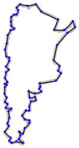{kind=link}
多边形常用于地理空间数据中描述国家、湖泊、城市等的轮廓。一个多边形有一个 外环 ，由一个封闭的线字符串定义，并且可能有一个或多个 内环 ，每个内环也由封闭的线字符串定义。外环表示多边形的轮廓，而内环（如果有的话）表示多边形内部的“孔”：
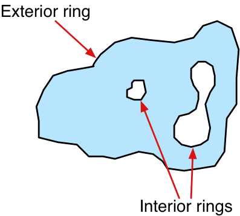{kind=link}
这些孔通常用于表示湖泊中的岛屿等内部特征。
Geospatial data often represents shapes in the form of points, paths, and outlines:
A point, of course, is simply a coordinate, described by two or more numbers within a projected or unprojected coordinate system.
备注
Downloading the example code
You can download the example code files for all Packt books you have purchased from your account at http://www.packtpub.com. If you purchased this book elsewhere, you can visit http://www.packtpub.com/support and register to have the files e-mailed directly to you
A path is generally described using what is called a linestring:
A linestring represents a path as a connected series of line segments. A linestring is a deliberate simplification of a path, a way of approximating the curving path without having to deal with the complex maths required to draw and manipulate curves. Linestrings are often used in geospatial data to represent roads, rivers, contour lines, and so on.
备注
Downloading the example code
Linestrings are also sometimes referred to as polylines. When a linestring is closed (that is, the last line segment finishes at the point where the first line segment starts), the linestring is often referred to as a linear ring.
An outline is often represented in geospatial data using a polygon:
Polygons are commonly used in geospatial data to describe the outline of countries, lakes, cities, and so on. A polygon has an exterior ring, defined by a closed linestring, and may optionally have one or more interior rings within it, each also defined by a closed linestring. The exterior ring represents the polygon’s outline, while the interior rings (if any) represent “holes” within the polygon:
These holes are often used to depict interior features such as islands within a lake.